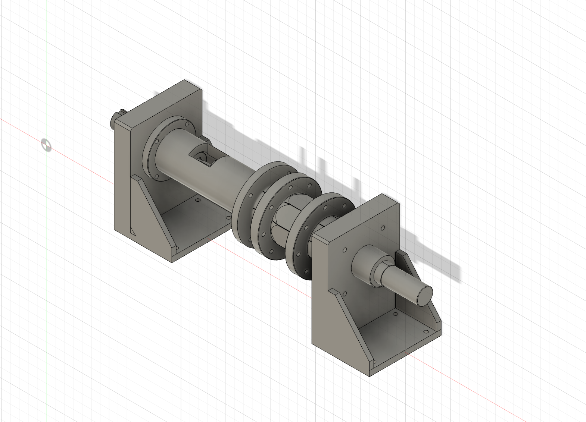
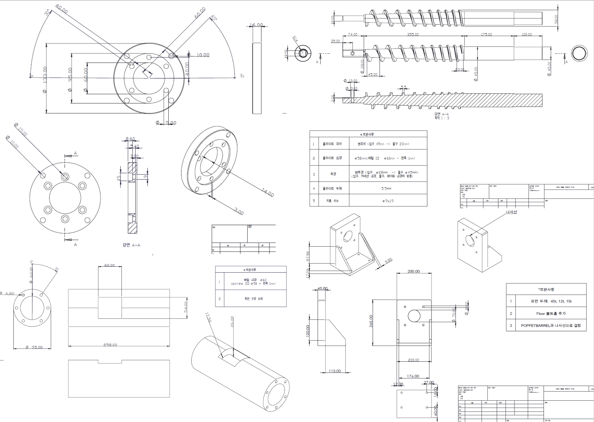

CNSL Screw Press — Waste-to-Value Oil Extraction Machine

A small screw press that turns waste cashew shells into CNSL (cashew nut shell liquid), a natural phenolic oil used in friction materials, industrial coatings, and resins, and increasingly studied as a sustainable aviation fuel feedstock. The machine is designed to be operated by local farmers without chemical processing, refining equipment, or precise temperature control. Built as an Interdisciplinary Capstone Design project at the Dept. of Mechanical Engineering, SNU (Advisor: Prof. Sung-Hoon Ahn).
Motivation
Tanzania, Africa's second-largest cashew producer, discards an estimated 175,000–210,000 tons of cashew shells every year. Those shells contain CNSL — but existing screw presses are designed for soft oil seeds like sesame or coconut. Cashew shells are hard, irregular in size, and their oil is highly viscous, so a conventional press clogs and yields poorly. Team COMET set out to build a machine that turns this waste stream into a revenue source for local farmers.
Mechanical Design
As team lead, I drove the mechanical design around the constraints of cashew shells:
- A variable-pitch screw that progressively compresses the shells as they advance;
- Tapered discharge slits whose cross-section expands outward so the viscous oil cannot clog the outlet;
- Internal barrel protrusions that prevent the material from co-rotating with the screw and raise pressure at the slit inlet;
- A poppet-valve structure that regulates discharge pressure.
Screw pitch, screw-barrel clearance, and barrel bore were set by an oil-flow model I built from cashew-shell material properties and machine measurements, and the geared motor was sized from the calculated extraction pressure and target flow rate rather than picked off a catalog.

Fabrication
I modeled the machine in Fusion 360 and SolidWorks, then produced roughly ten 2D fabrication drawings in AutoCAD for custom parts. I handled the entire vendor loop myself — requesting quotes from metal fabrication shops, revising drawings and the 3D model in response to manufacturability feedback, and receiving the finished parts — which taught me first-hand how drawings for real fabrication differ from classroom drawings. In parallel I selected and purchased the standard mechanical components (geared motor, shaft couplings, bearings) to match the design specifications. The whole cycle from design kickoff to finished drawings took about a month and a half, on a total build budget of roughly KRW 5 million.

Assembly & Validation
Assembly happened in one overnight session that I led. Real hardware pushed back: some dimensions didn't mate as drawn and several parts needed additional machining on the spot, which we resolved with hand tools, shop machines, and engineering judgment rather than another vendor round-trip. The completed press was validated with substitute feedstocks — peanuts and sesame chosen to approximate the oil content, viscosity, and hardness of cashew shells, which are not obtainable in Korea — and successfully extracted oil in live demonstration.
Recognition & What's Next
- Selected, 2026 Appropriate Technology-based Youth Startup Global PoC Support Program (Sanhak Foundation · UNITEF · Academic Society for Appropriate Technology) — one of only four teams selected for the Tanzania track (eight nationwide). The program funds on-site validation in Tanzania, where we will collect performance data on real cashew shells (moisture content, size variance, residual oil) to drive a second-generation design.
- Finalist, S.M.A.R.T International Sustainable Technology Competition (Academic Society for Appropriate Technology, 2026).
- A patent filing strategy covering the variable-pitch screw, barrel, and poppet system is in preparation.
Role
Team of 4, team lead. Owned CAD design (Fusion 360, SolidWorks, AutoCAD), the oil-flow model and motor sizing, fabrication sourcing and vendor communication, and led the assembly session.